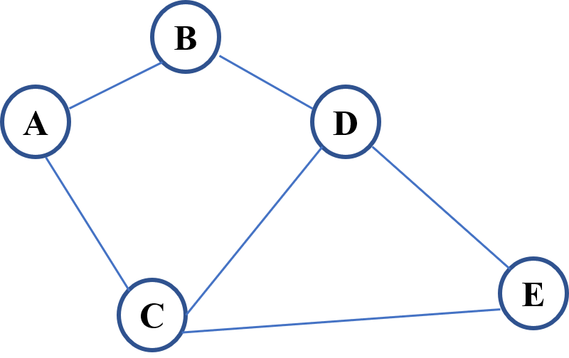
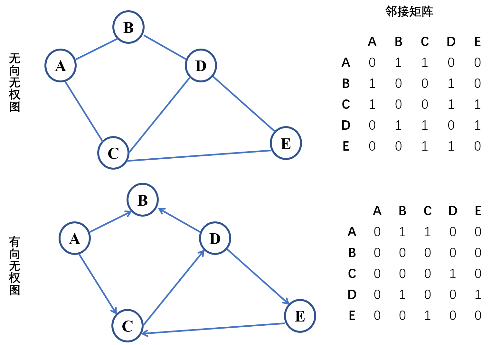
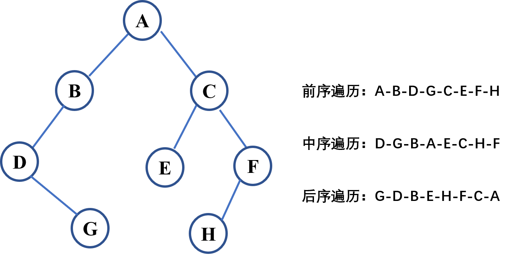
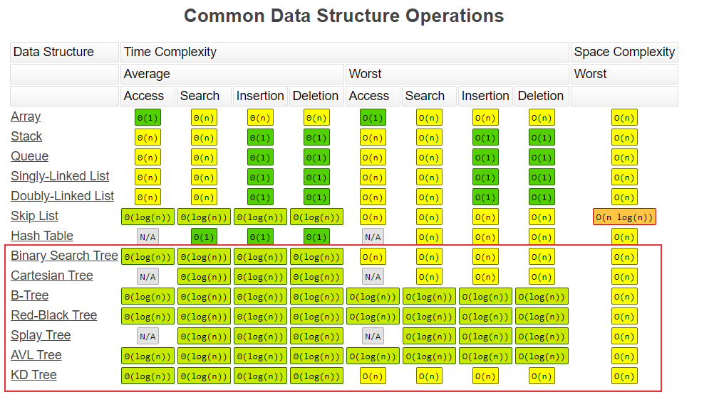
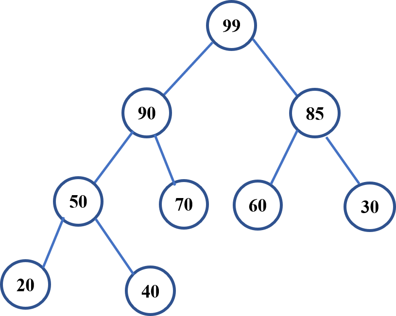

前面的文章介绍过链表，它其实就是特殊化的树，而树是特殊化的图，堆是一种特殊的树。本文将介绍这几种数据结构。
图-Graph
图的定义
图是一组顶点和一组边的集合，每条边连接一对顶点。在现实生活中，到处都会遇到图网络的概念，将问题空间表示为网络，比如计算机网络，社交网络等，由一个个节点和连接他们的边组成。

图可以表示为Graph(V, E)：
1、顶点V (vertex)
- 出度：顶点的出边条数
- 入度：顶点的入边条数
2、边E (edge)
- 有向和无向
- 权重
图的分类
图主要包括以下几类：
- 无向无权图：节点之间的连接没有方向，是双向的，边没有权重（也可以说权重为1）。
- 无向有权图：节点之间的连接没有方向，有权重，比如两个节点间的物理距离。
- 有向无权图：节点之间通过有向的边连接，只能一个方向。
- 有向有权图：节点之间通过有向的边连接，有权重。

图的常见算法
DFS-深度优先搜索
深度优先搜索（Depth First Search, DFS）包括：前序遍历Preorder (Root-Left-Right)，中序遍历Inorder (Left-Root-Right) 和后序遍历Postorder (Left-Right-Root)。
BFS-广度优先搜索
广度优先搜索（Breadth First Search, BFS）：一层一层的遍历。
树-tree
二叉树
树是特殊化的图，由有限个节点组成。最常见的是二叉树，每个节点最多有两个子节点（左子节点，右子节点）组成，一个二叉树节点包含以下部分：
- 数据
- 指向左子节点的指针
- 指向右子节点的指针
python二叉树定义：1
2
3
4
5class BinaryTree:
def __init__(self, val):
self.val = val
self.left = None
self.right = None
二叉树遍历
和图的搜索一样，二叉树的搜索也可以使用以下两种遍历搜索方式:
- 深度优先搜索
- 广度优先搜索
深度优先搜索包括前序遍历，中序遍历和后序遍历，每个节点访问一次，且仅访问一次。
- 前序遍历：根左右
- 中序遍历：左根右
- 后序遍历：左右根

二叉搜索树
二叉搜索树(Binary Search Tree)，也称二叉排序树、有序二叉树(Ordered Binary Tree)、排序二叉树(Sorted Binary Tree)，是指一棵空树或者具有下列性质的二叉树：
- 左子树上所有结点的值均小于它的根结点的值
- 右子树上所有结点的值均大于它的根结点的值
- 左、右子树也分别为二叉搜索树
二叉搜索树的搜索、插入、移除等操作的动画演示：https://visualgo.net/zh/bst
复杂度分析

堆-Heap
堆是可以迅速找到一堆数中的最大或者最小值的数据结构，根节点最大的堆叫大顶堆或大根堆，根节点最小的堆叫做小顶堆或小根堆。常见的堆有二叉堆(Binary heap)、斐波那契堆(Fibonacci heap)等，下面主要介绍二叉堆。
二叉堆
二叉堆是一种特殊的二叉树，和二叉搜索树不同，是一颗完全二叉树。以大顶堆为例，二叉堆满足下列性质：
- 是一棵完全二叉树
- 树中任意节点的值总是 >= 其子节点的值

二叉堆一般都通过数组来实现，上图的二叉堆可表示为一维数组：[99, 90, 85, 50, 70, 60, 30, 20, 40] 。可以发现其索引具有以下关系：
- 根节点(顶堆元素)：a[0]
- 索引为
i的左孩子的索引是(2*i+1) - 索引为
i的右孩子的索引是(2*i+2) - 索引为
i的父结点的索引是floor((i-1)/2)
二叉堆常见操作
对二叉堆的常见操作包括查找(最大值)、删除(最大值)和插入，他们的时间复杂度分别为O(1)、O(logN)和O(logN)。
- 对于插入操作，元素先插入到堆的尾部，然后依次向上调整（与父节点进行比较、交换）整个堆的结构(一直到根)。
- 对于删除操作，先删除堆顶元素，接下来将堆尾元素替换到顶部，然后依次从根部向下调整（和子节点比较，将较大的子节点和它交换）整个堆的结构(一直到堆尾)
二叉堆是用于实现优先队列(priority queue)的数据结构，优先队列中的元素被赋予优先级，具有最高优先级的元素最先删除，具有最高级先出（first in, largest out）的特性。但是二叉堆不是优先队列的最优实现，插入效率较低，比如斐波那契堆(Fibonacci heap)具有更优的性能。
本文标题:算法笔记：树、堆和图
文章作者:hiyo
文章链接:https://hiyongz.github.io/posts/algorithm-notes-for-graph-tree-and-heap/
许可协议:本博客文章除特别声明外，均采用CC BY-NC-ND 4.0 许可协议。转载请保留原文链接及作者。